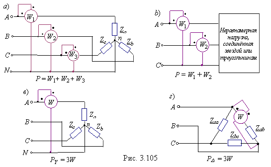

|
Для измерения активной мощности трёхфазной системы в общем случае (неравномерная нагрузка и наличие нулевого провода) необходимо включить три ваттметра (рис. 2.105, а). Активная мощность системы равна сумме показаний трёх ваттметров.  Если нулевой провод отсутствует, то измерение мощности проводят двумя ваттметрами (рис. 2.105, б). Сумма показаний двух ваттметров при этом определяет активную мощность всей системы независимо от того, звездой или треугольником соединена нагрузка. При равномерной нагрузке фаз, соединенных звездой (рис. 2.105, в) или треугольником (рис.2.105, г), достаточно измерить мощность одной фазы и результат утроить. |